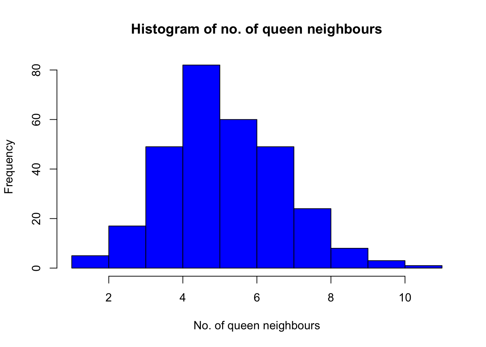
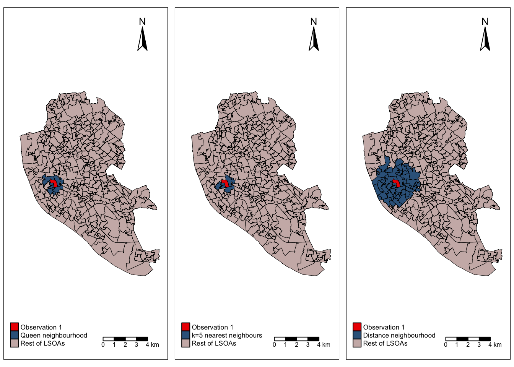
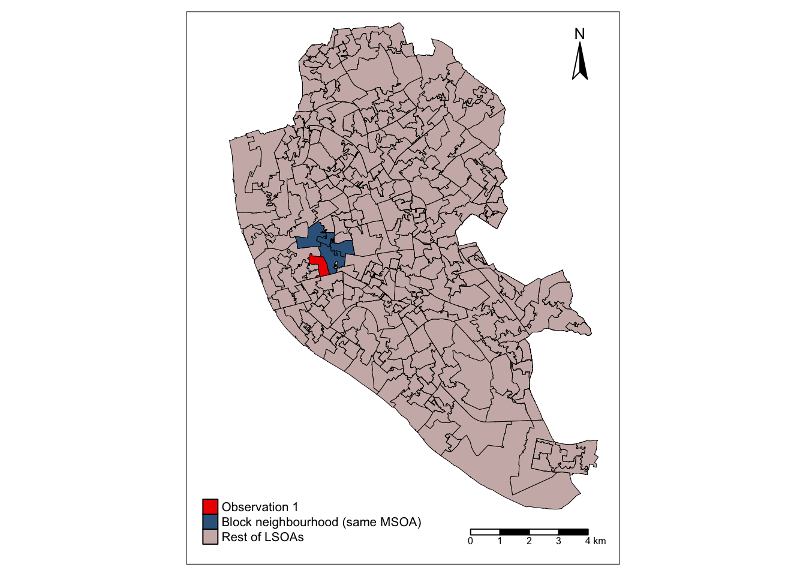
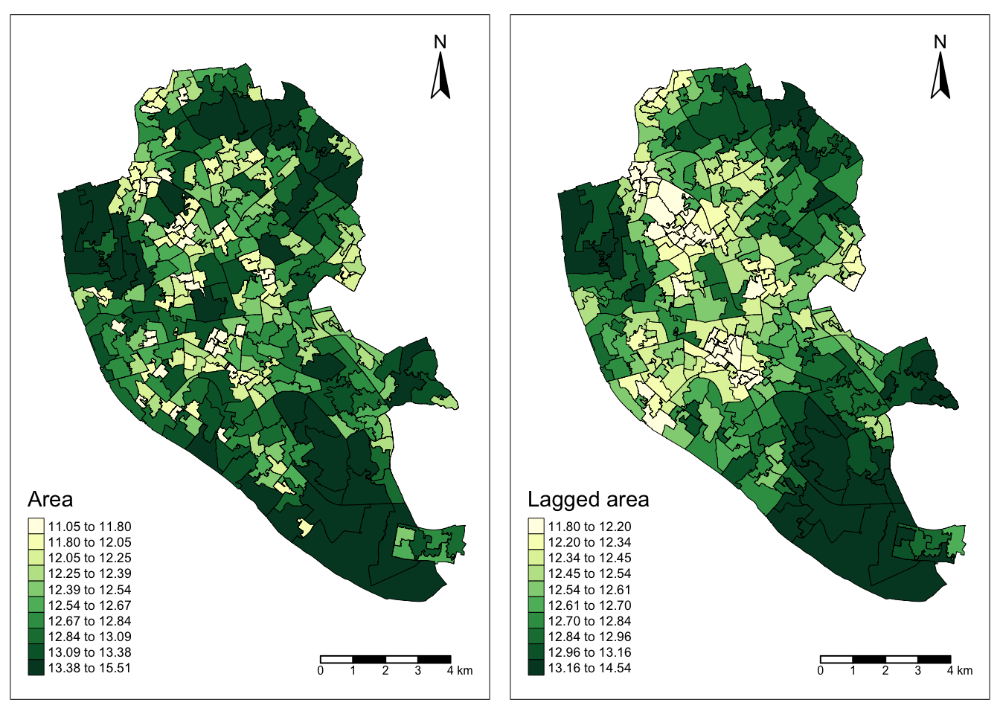
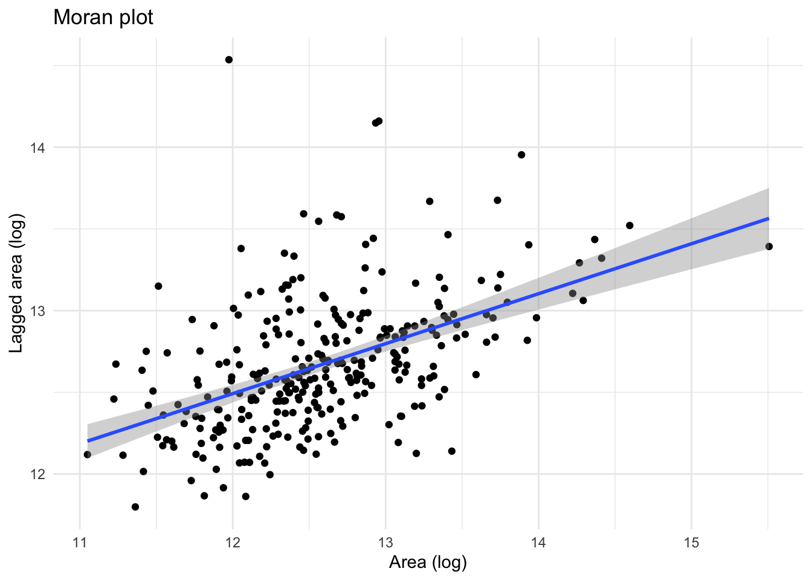
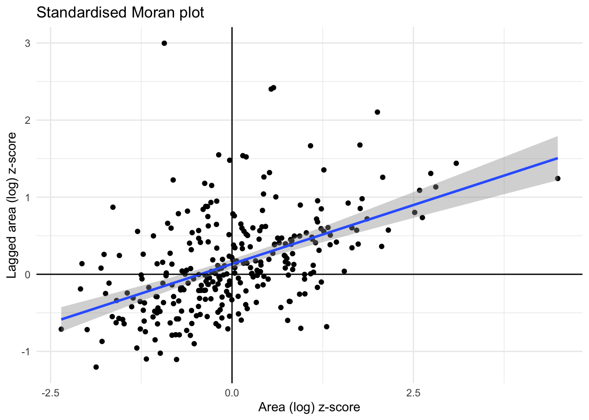

library(sf)
library(dplyr)
library(spdep)
library(tibble)
library(ggplot2)
library(tmap)
library(patchwork)Lab
There are several ways to create spatial weigths matrices so they contain an accurate representation that aligns with the way we understand spatial interactions between observations associated with different locations. In this session, we will introduce the most commonly used ones and will show how to compute them with the following libraries
Data
For this session, we will use a dataset of small areas (or Lower layer Super Output Areas, LSOAs) for Liverpool, UK. The dataset is accessed remotely through the web or downloaded from GitHub and then loaded into the df variable:
# Read the file in
df <- read_sf("./data/Liverpool/liv_lsoas.gpkg")# Display first few lines
head(df)Simple feature collection with 6 features and 2 fields
Geometry type: MULTIPOLYGON
Dimension: XY
Bounding box: xmin: 334715 ymin: 385417 xmax: 339020.8 ymax: 390548
Projected CRS: Transverse_Mercator
# A tibble: 6 × 3
LSOA11CD MSOA11CD geom
<chr> <chr> <MULTIPOLYGON [m]>
1 E01006512 E02001377 (((336103.4 389628.6, 336103.4 389629.2, 336103.4 389629.…
2 E01006513 E02006932 (((335173.8 389691.5, 335169.8 389693.8, 335160.4 389699.…
3 E01006514 E02001383 (((335495.7 389697.3, 335495.4 389699.3, 335486.8 389699.…
4 E01006515 E02001383 (((334953 389029, 334951 389035, 334950 389040, 334949 38…
5 E01006518 E02001390 (((335354 388601.9, 335354 388602, 335347 388600, 335335.…
6 E01006519 E02001402 (((338007.9 385540.8, 338000 385547, 337997 385549.3, 337…Building spatial weights
Contiguity
Contiguity weights matrices define spatial connections through the existence of common boundaries. This makes it directly suitable to use with polygons: if two polygons share boundaries to some degree, they will be labeled as neighbors under these kinds of weights. We will learn two approaches, namely queen and rook, characterised by how much they need to share.
- Queen
Under the queen criterion, two observations only need to share a vertex (a single point) of their boundaries to be considered neighbors. Constructing a weights matrix under these principles can be done by running:
# list all adjacent polygons for each polygon
nb_q <- poly2nb(df, queen = TRUE) # Construct neighbours list from polygon listand then:
w_queen <- nb2listw(nb_q, style = "B") # Create a spatial weights matrix using queen contiguityIn reality, w_queen is not stored as a matrix containing values for each pair of observations, including zeros for those that are not neighbours. Instead, to save memory, for each observation it stores a list of those other observations that are neighbours according to the queen criterion, and it does not store any values for those observations that are not neighbours. To access summary information about the “spatial weights matrix”, we run the following code:
summary(w_queen) # Display summary information about the spatial weights matrixCharacteristics of weights list object:
Neighbour list object:
Number of regions: 298
Number of nonzero links: 1674
Percentage nonzero weights: 1.88505
Average number of links: 5.61745
Link number distribution:
1 2 3 4 5 6 7 8 9 10 11
1 4 17 49 82 60 49 24 8 3 1
1 least connected region:
185 with 1 link
1 most connected region:
109 with 11 links
Weights style: B
Weights constants summary:
n nn S0 S1 S2
B 298 88804 1674 3348 40680Note that when we created w_queen using the nb2list2 function, we set style to "B". This means that the weights are recorded as a binary variable taking the value 1 to mark the presence of a link between an observation and a neighbouring one.
To see what the ID of the neighbouring polygons for the first polygon in df, we can run the following:
nb_q[[1]] # Access the neighbors of the first polygon in the list[1] 2 149 155 221 287 298We can check if polygon 149 is a neighbour of polygon 1:
149 %in% nb_q[[1]] # Check if district 149 is a neighbor of the first polygon in the list[1] TRUEYes it is, as it was obvious from the output of nb_q[[1]], which includes 149 as one of the neighbours of 1. We can also check if polygon 150 is a neighbour of polygon 1. This should not be the case.
150 %in% nb_q[[1]] # Check if district 150 is a neighbor of the first polygon in the list[1] FALSEWhat are the weights assigned to the neighbours of polygon 1?
w_queen$neighbours[[1]] # Display the neighbors of the first polygon in the spatial weights matrix[1] 2 149 155 221 287 298w_queen$weights[[1]] # Display the corresponding weights for the neighbors of the first polygon[1] 1 1 1 1 1 1The weights are set to 1 for each of the neighbours of 1. This is because we set style to "B" when we created w_queen. More options are available as we will see later.
How many neighbours does observation 1 have? This can be easily checked using the length() function:
length(w_queen$neighbours[[1]]) # Calculate the number of neighbors for the first polygon in the spatial weights matrix[1] 6But if we wanted to have a more comprehensive understanding of the number of neighbours for all the observations in our dataset, we need to obtain a histogram. This is achieved by running:
# Get the number of neighbors for each element
num_nb_q <- sapply(nb_q, function(x) length(x))
# Create a dataframe with LSOA11CD and num_neighbors
nb_counts_q <- data.frame(LSOA11CD = df$LSOA11CD, num_nb_q = num_nb_q)
# Create a histogram of the number of queen neighbors
hist(nb_counts_q$num_nb_q, breaks = 10, col = "blue", main = "Histogram of no. of queen neighbours", xlab = "No. of queen neighbours")
Looking at the histogram, we conclude that the mode is 4 queen neighbours. We can obtain some additional summary statistics:
# Calculate the mean number of queen neighbours
mean(nb_counts_q$num_nb_q) [1] 5.61745# Find the maximum number of queen neighbours
max(nb_counts_q$num_nb_q) [1] 11# Find the minimum number of queen neighbours
min(nb_counts_q$num_nb_q) [1] 1Are there any isolated nodes, or in other words, are there any polygons that have zero queen neighbours?
# Check if there are elements with zero queen neighbours
0 %in% nb_counts_q$num_nb_q [1] FALSEThe answer is no!
Let’s visualise the queen neighbourhood of the first observation. To do this, we first create sub data frames including polygon 1 and the queen neighbourhood of polygon 1:
# Extract the first row of the dataframe as 'obs1'
obs1 <- df[1,]
# Extract the rows corresponding to the neighbors of the first polygon using queen contiguity
obs1_nb_q <- df[c(nb_q[[1]]),]We then create a map this using different colors with the tmap package, which inherits lots of functionalities from ggplot2. We store the plot in the final_map_q variable, but we will not plot it just yet. We will plot it side to side with other maps representing other types of neighbourhoods so we can compare these:
# Create a map for all the units in mistyrose3
rest_map <- tm_shape(df) +
tm_borders(col = "black", lwd = 0.5) +
tm_fill(col = "mistyrose3")
# Create a map for neighbors in steelblue4
neighbors_map <- tm_shape(obs1_nb_q) +
tm_borders(col = "black", lwd = 0.5) +
tm_fill(col = "steelblue4")
# Create a map for observation 1 in red2
obs1_map <- tm_shape(obs1) +
tm_borders(col = "black", lwd = 0.5) +
tm_fill(col = "red2")
# Combine all the maps, add compass, scale bar, and legend
final_map_q <- rest_map + neighbors_map + obs1_map +
tm_compass(position = c("right", "top")) +
tm_scale_bar(position = c("right", "bottom")) +
tm_add_legend(type = "fill", col = c("red2", "steelblue4","mistyrose3"),
labels = c("Observation 1", "Queen neighbourhood", "Rest of LSOAs"), title = "") +
tm_layout(legend.text.size = 0.55, inner.margins = c(0.01, 0.1, 0.01, 0.05),
legend.position = c(0.03,0.03), legend.width=0.55)- Rook
Rook contiguity is similar to and, in many ways, superseded by queen contiguity. However, since it sometimes comes up in the literature, it is useful to know about it. The main idea is the same: two observations are neighbors if they share some of their boundary lines. However, in the rook case, it is not enough with sharing only one point, it needs to be at least a segment of their boundary. In most applied cases, these differences usually boil down to how the geocoding was done, but in some cases, such as when we use raster data or grids, this approach can differ more substantively and it thus makes more sense.
We create the list of neighbours using poly2nb() again, but this time setting the queen argument to FALSE.
nb_r <- poly2nb(df, queen = FALSE) # Construct neighbors list using rook contiguityFrom the list of neighbours for each polygon, we can create a rook spatial weights matrix, setting the weights to 1’s to mark the presence of a connection between two polygons:
# Create a spatial weights matrix using rook contiguity
w_rook <- nb2listw(nb_r, style = "B")
# Display summary information about the spatial weights matrix
summary(w_rook) Characteristics of weights list object:
Neighbour list object:
Number of regions: 298
Number of nonzero links: 1642
Percentage nonzero weights: 1.849016
Average number of links: 5.510067
Link number distribution:
1 2 3 4 5 6 7 8 9 10 11
1 4 18 52 87 62 44 18 9 2 1
1 least connected region:
185 with 1 link
1 most connected region:
109 with 11 links
Weights style: B
Weights constants summary:
n nn S0 S1 S2
B 298 88804 1642 3284 39104Distance
Distance-based matrices assign the weight to each pair of observations as a function of how far from each other they are. How this is translated into an actual weight varies across types and variants, but they all share that the ultimate reason why two observations are assigned some weight is due to the distance between them.
- \(K\)-nearest neighbours
One approach to define weights is to take the distances between a given observation and the rest of the set, rank them, and consider as neighbors the \(k\) closest ones. That is exactly what the \(k\)-nearest neighbors (KNN) criterion does.
To calculate the 5 nearest neighbours for each polygon, we can use the knearneigh() function, setting k=5. Note that this function only takes point geometries, so instead of passing df directly, we compute the coordinates of the centroids for each polygon using st_centroid() and st_coordinates():
# Create k-Nearest Neighbors list with k=5
nb_knn <- knearneigh(st_coordinates(st_centroid(df)), k=5) Warning: st_centroid assumes attributes are constant over geometriesAnd once again, from the list of neighbours, we can create the “spatial weights matrix”, this time using the knn2nb() function:
# Convert k-Nearest Neighbors list to a spatial weights matrix
w_knn <- knn2nb(nb_knn)Like before, we create a map that will help us visualise the neighbourhood of polygon 1 according to the 5-nearest neighbours criterion:
# Extract the first row of the dataframe as 'obs1'
obs1 <- df[1,]
# Extract the rows corresponding to the k-Nearest Neighbors of the first centroid
obs1_nb_knn <- df[c(w_knn[[1]]),]# Create a map for all the units in mistyrose3
rest_map <- tm_shape(df) +
tm_borders(col = "black", lwd = 0.5) +
tm_fill(col = "mistyrose3")
# Create a map for neighbors in steelblue4
neighbors_map <- tm_shape(obs1_nb_knn) +
tm_borders(col = "black", lwd = 0.5) +
tm_fill(col = "steelblue4")
# Create a map for observation 1 in red2
obs1_map <- tm_shape(obs1) +
tm_borders(col = "black", lwd = 0.5) +
tm_fill(col = "red2")
# Combine all the maps, add compass, scale bar, and legend
final_map_knn <- rest_map + neighbors_map + obs1_map +
tm_compass(position = c("right", "top")) +
tm_scale_bar(position = c("right", "bottom")) +
tm_add_legend(type = "fill", col = c("red2", "steelblue4","mistyrose3"),
labels = c("Observation 1", "k=5 nearest neighbours", "Rest of LSOAs"), title = "") +
tm_layout(legend.text.size = 0.55, inner.margins = c(0.01, 0.1, 0.01, 0.05),
legend.position = c(0.03,0.03), legend.width=0.55)- Distance band
Another approach to build distance-based spatial weights matrices is to “draw a circle” of certain radius (in case your observation is a polygon, as is our case, the circle should be centered at the centroid of each polygon) and consider as neighbours every observation (whose centroid) falls within the circle. The technique has two main variations: binary and continuous. In the former one, every neighbor is given a weight of one, while in the second one, the weights can be further tweaked by the distance to the observation of interest. We start looking at the binary variation.
First, we create a list of neighbours at a distance less than 2000 meters away from each polygon:
# Create a distance-based neighbors list with a minimum distance of 0 and maximum distance of 2000 meters
nb_d <- dnearneigh(st_coordinates(st_centroid(df)), d1=0, d2=2000)Warning: st_centroid assumes attributes are constant over geometriesWe use this to obtain a spatial weights matrix according to the distance-based criterion
# Create a spatial weights matrix using distance-based neighbors with binary style
w_d <- nb2listw(nb_d, style = "B")Once again, we create a map to visualise this neighbourhood:
obs1 <- df[1,]
obs1_nb_d <- df[c(nb_d[[1]]),]# Create a map for all the units in mistyrose3
rest_map <- tm_shape(df) +
tm_borders(col = "black", lwd = 0.5) +
tm_fill(col = "mistyrose3")
# Create a map for neighbors in steelblue4
neighbors_map <- tm_shape(obs1_nb_d) +
tm_borders(col = "black", lwd = 0.5) +
tm_fill(col = "steelblue4")
# Create a map for observation 1 in red2
obs1_map <- tm_shape(obs1) +
tm_borders(col = "black", lwd = 0.5) +
tm_fill(col = "red2")
# Combine all the maps, add compass, scale bar, and legend
final_map_d <- rest_map + neighbors_map + obs1_map +
tm_compass(position = c("right", "top")) +
tm_scale_bar(position = c("right", "bottom")) +
tm_add_legend(type = "fill", col = c("red2", "steelblue4","mistyrose3"),
labels = c("Observation 1", "Distance neighbourhood", "Rest of LSOAs"), title = "") +
tm_layout(legend.text.size = 0.55, inner.margins = c(0.01, 0.1, 0.01, 0.05),
legend.position = c(0.03,0.03), legend.width=0.55)We are now ready to plot the three maps we created side to side and compare the different neighbourhoods:
tmap_arrange(final_map_q, final_map_knn, final_map_d)
- Inverse distance weights
An extension of the weights above is to introduce further detail by assigning different weights to different neighbours within the radius based on how far they are from the observation of interest. For example, we could think of assigning the inverse of the distance between the centroid of a polygon \(i\) and the centroid of a neighouburing polygon \(j\) as \(w_{ij} = \dfrac{1}{d_{ij}}\), where \(d_{ij}\) is the distance in meters between the centroids. This way, polygons that are closer to \(i\) “weight” more.
This can be computed by firstly, computing the list of neighbours under a distance of 2,000 meters as we did before:
# Create an inverse distance-based neighbors list with a minimum distance of 0 and maximum distance of 2000
nb_d_inverse <- dnearneigh(st_coordinates(st_centroid(df)), d1=0, d2=2000)Warning: st_centroid assumes attributes are constant over geometriesThen, we can obtain the distance between the centroid of each polygon and its neighbours. Note that we set longlat to FALSE since the coordinate reference system (CRS) for the geometry field in df is not expressed as longitude-latitude decimal degrees:
# Calculate distances between neighbors using the inverse distance-based neighbors list
dist <- nbdists(nb_d_inverse, st_coordinates(st_centroid(df)), longlat = FALSE)Warning: st_centroid assumes attributes are constant over geometries# Create a list of weights by taking the reciprocal of distances
w_inverse <- lapply(dist, function(x) 1/(x))Let’s inspect the weights given to the neighbours of the first polygon in df:
w_inverse[[1]] [1] 0.0014293845 0.0014775670 0.0008560902 0.0008248890 0.0006169082
[6] 0.0007411043 0.0007861690 0.0005497876 0.0005350619 0.0005334485
[11] 0.0005077662 0.0012913246 0.0009829388 0.0006646896 0.0008091102
[16] 0.0008041621 0.0005807921 0.0015580848 0.0005792682 0.0008094105
[21] 0.0005404384 0.0006692724 0.0005636064 0.0007081589 0.0006001997
[26] 0.0005066073 0.0005804556 0.0005049042 0.0007100073 0.0010060556
[31] 0.0010939774 0.0021358621 0.0010380355 0.0005412010 0.0006706428
[36] 0.0005877428 0.0041059582 0.0007474042 0.0006616669 0.0008186524
[41] 0.0005138538 0.0010182534 0.0006099168 0.0023982797Note that none of them should be smaller than 1/2,000 = 0.0005 since all the neighbours are within a 2,000 meter radius from the centroid of the first polygon.
Following this logic of more detailed weights through distance, there is a temptation to take it further and consider everyone else in the dataset as a neighbor whose weight will then get modulated by the distance effect shown above. However, although conceptually correct, this approach is not always the most computationally or practical one. Because of the nature of spatial weights matrices, particularly because of the fact their size is \(N\) by \(N\) if all the neighbours are present, they can grow substantially large. A way to cope with this problem is by making sure they remain fairly sparse (with many zeros). Sparsity is typically ensured in the case of contiguity or KNN by construction but, with inverse distance, it needs to be imposed as, otherwise, the matrix could be potentially entirely dense (no zero values other than the diagonal). In practical terms, what is usually done is to impose a distance threshold beyond which no weight is assigned and interaction is assumed to be non-existent, as we did here by setting this threshold to 2,000 meters. Beyond being computationally feasible and scalable, results from this approach usually do not differ much from a fully “dense” one as the additional information that is included from further observations is almost ignored due to the small weight they receive.
Block weights
Block weights connect every observation in a dataset that belongs to the same category in a list provided ex-ante. Usually, this list will have some relation to geography an the location of the observations but, technically speaking, all one needs to create block weights is a list of memberships. In this class of weights, neighboring observations, those in the same group, are assigned a weight of one, and the rest receive a weight of zero.
In this example, we will build a spatial weights matrix that connects every LSOA with all the other ones in the same MSOA. See how the MSOA code is expressed for every LSOA:
head(df)Simple feature collection with 6 features and 2 fields
Geometry type: MULTIPOLYGON
Dimension: XY
Bounding box: xmin: 334715 ymin: 385417 xmax: 339020.8 ymax: 390548
Projected CRS: Transverse_Mercator
# A tibble: 6 × 3
LSOA11CD MSOA11CD geom
<chr> <chr> <MULTIPOLYGON [m]>
1 E01006512 E02001377 (((336103.4 389628.6, 336103.4 389629.2, 336103.4 389629.…
2 E01006513 E02006932 (((335173.8 389691.5, 335169.8 389693.8, 335160.4 389699.…
3 E01006514 E02001383 (((335495.7 389697.3, 335495.4 389699.3, 335486.8 389699.…
4 E01006515 E02001383 (((334953 389029, 334951 389035, 334950 389040, 334949 38…
5 E01006518 E02001390 (((335354 388601.9, 335354 388602, 335347 388600, 335335.…
6 E01006519 E02001402 (((338007.9 385540.8, 338000 385547, 337997 385549.3, 337…To build a block spatial weights matrix that connects as neighbors all the LSOAs in the same MSOA, we only require the MSOA codes. Using nb2blocknb(), this is very straighforward!
# Create a block weights matrix using MSOA11CD as block IDs and LSOA11CD as unit IDs
w_block <- nb2blocknb(nb=NULL, df$MSOA11CD, row.names = df$LSOA11CD)We can visualise this by creating a map, using the same procedure as before:
# Extract the first row of the dataframe as 'obs1'
obs1 <- df[1,]
# Extract the rows corresponding to the block neighbors of the first observation
obs1_nb_block <- df[c(w_block[[1]]),]# Create a map for the rest of the units in mistyrose3
rest_map <- tm_shape(df) +
tm_borders(col = "black", lwd = 0.5) +
tm_fill(col = "mistyrose3")
# Create a map for block neighbors in steelblue4
neighbors_map <- tm_shape(obs1_nb_block) +
tm_borders(col = "black", lwd = 0.5) +
tm_fill(col = "steelblue4")
# Create a map for observation 1 in red2
obs1_map <- tm_shape(obs1) +
tm_borders(col = "black", lwd = 0.5) +
tm_fill(col = "red2")
# Combine all the maps, add compass, scale bar, and legend
final_map_block <- rest_map + neighbors_map + obs1_map +
tm_compass(position = c("right", "top")) +
tm_scale_bar(position = c("right", "bottom")) +
tm_add_legend(type = "fill", col = c("red2", "steelblue4","mistyrose3"),
labels = c("Observation 1", "Block neighbourhood (same MSOA)", "Rest of LSOAs"), title = "") +
tm_layout(legend.text.size = 0.65, inner.margins = c(0.1, 0.1, 0.02, 0.05),
legend.position = c(0.03,0.03), legend.width=0.55)final_map_block
To check that the highlighted polygons in the map above are actually the ones belonging to the same MSOA as observation 1, we can do the following. First, output the rows of df where the MSOA code, given by column MSOA11CD is the as for the first polygon (observation 1):
# Subset the dataframe to get rows with matching MSOA11CD as observation 1
df[df$MSOA11CD == obs1$MSOA11CD, ]Simple feature collection with 5 features and 2 fields
Geometry type: MULTIPOLYGON
Dimension: XY
Bounding box: xmin: 335310.8 ymin: 389306.6 xmax: 337349.4 ymax: 391245.9
Projected CRS: Transverse_Mercator
# A tibble: 5 × 3
LSOA11CD MSOA11CD geom
<chr> <chr> <MULTIPOLYGON [m]>
1 E01006512 E02001377 (((336103.4 389628.6, 336103.4 389629.2, 336103.4 389629.…
2 E01006747 E02001377 (((335371.7 390556.5, 335367.6 390568.1, 335366.6 390570.…
3 E01006748 E02001377 (((336367.8 390638.9, 336387 390629.9, 336387.5 390629.6,…
4 E01006751 E02001377 (((336357.9 389851.3, 336354.6 389857.8, 336354.4 389858.…
5 E01033763 E02001377 (((336853.1 390479.4, 336858.5 390480.7, 336862.5 390481.…These observations should be the same as the rows corresponding to the neighbours of the first polygon as given by the nb2blocknb fucntion:
# Extract the rows corresponding to the block neighbors of the first observation
df[c(w_block[[1]]),]Simple feature collection with 4 features and 2 fields
Geometry type: MULTIPOLYGON
Dimension: XY
Bounding box: xmin: 335310.8 ymin: 389409.1 xmax: 337349.4 ymax: 391245.9
Projected CRS: Transverse_Mercator
# A tibble: 4 × 3
LSOA11CD MSOA11CD geom
<chr> <chr> <MULTIPOLYGON [m]>
1 E01006747 E02001377 (((335371.7 390556.5, 335367.6 390568.1, 335366.6 390570.…
2 E01006748 E02001377 (((336367.8 390638.9, 336387 390629.9, 336387.5 390629.6,…
3 E01006751 E02001377 (((336357.9 389851.3, 336354.6 389857.8, 336354.4 389858.…
4 E01033763 E02001377 (((336853.1 390479.4, 336858.5 390480.7, 336862.5 390481.…Note that the first output is a dataframe with one more row than the second. This is because the first output includes all the observations in MSOA with code E02001377, whereas the second output only includes the block neighbours that share MSOA with LSOA with code E91006512.
Standardising spatial weights matrices
In the context of many spatial analysis techniques, a spatial weights matrix with raw values (e.g. ones and zeros for the binary case) is not always the best suiting one for analysis and some sort of transformation is required. This implies modifying each weight so they conform to certain rules. A common one is being row-normalised. This simply means, that for each observation, the weights corresponding to the neighbours must add to 1. We will look into how we can do this in the case of the queen neighbourhood.
We define the neighbour list once again according to the queen criterion:
# Construct neighbors list using queen contiguity
nb_q <- poly2nb(df, queen = TRUE)Before, we constructed the spatial weights matrix using style = "B" for binary values. To have row-normalised weights, we set style = "W".
# Create a binary spatial weights matrix using queen contiguity
w_queen <- nb2listw(nb_q, style = "B")
# Create a row-standardized spatial weights matrix using queen contiguity
w_queen_std <- nb2listw(nb_q, style = "W")We can now inspect the values of the weights of the neighbours of the first polygon in our data set:
# Display the binary weights for the first observation
w_queen$weights[[1]] [1] 1 1 1 1 1 1# Display the row-standardized weights for the first observation
w_queen_std$weights[[1]] [1] 0.1666667 0.1666667 0.1666667 0.1666667 0.1666667 0.1666667The sum of row-standarised weights should add up to one:
# Calculate the sum of row-standardized weights for the first observation
sum(w_queen_std$weights[[1]])[1] 1YES!!!
Spatial lag
One of the most direct applications of spatial weight matrices is the so-called spatial lag. The spatial lag of a given variable observed at several locations is the product of a spatial weight matrix and the variable itself:
\[ Y_{sl} = WY \] where \(Y\) is a \(Nx1\) vector with the \(N\) observations of the variable. Recall that the product of a matrix and a vector equals the sum of a row by column element multiplication for the resulting value of a given row. In terms of the spatial lag:
\[ y_{sl-i}= \sum_{j=1}^Nw_{ij}y_j \] If we use row-standardized weights, \(w_{ij}\) becomes a proportion between zero and one, and \(y_{sl-i}\) can be seen as a weighted average of the variable \(Y\) in the neighborhood of \(i\).
To illustrate this here, we will use the area of each polygon as the variable \(Y\) of interest. And to make things a bit nicer later on, we will keep the log of the area instead of the raw measurement. Hence, let’s create a column for it:
# Calculate the logarithm of the area of each polygon and add it as a new column named 'area'
df$area <- log(as.vector(st_area(df)))The spatial lag of a given variable, we use the fucntion lag.listw():
# Calculate the spatial lag of the (log of) 'area' variable using the row-standardized spatial weights matrix
area.lag <- lag.listw(w_queen_std, df$area)Below, we output the IDs of the neighbouring polygons accroding to the queen criterion as well as the spatial lag value for observation 1 (i.e. the average value of the log of the area of the neighbours, weighted according to the row-standardised weights in the spatial weights matrix):
# Display the neighbors of the first observation in the spatial weights matrix
w_queen_std$neighbours[[1]][1] 2 149 155 221 287 298 # Display the spatial lag of the 'area' variable for the first observation
area.lag[[1]][1] 12.4066We add the spatial lag of the log of the area as a new column in df called w_area:
# Add the calculated spatial lag of 'area' as a new column named 'w_area'
df$w_area <- area.lagWe can create two choropleth maps, side to side, showing the values of the variable area in each polygon and of the lagged area:
# Create a map displaying the 'area' variable
area_map <- tm_shape(df) +
tm_borders(col = "black", lwd = 0.5) +
tm_fill("area", n=10, style = "quantile", title = "Area", palette = "YlGn") +
tm_compass(position = c("right", "top")) +
tm_scale_bar(position = c("right", "bottom")) +
tm_layout(legend.text.size = 0.55, inner.margins = c(0.1, 0.1, 0.02, 0.05), legend.position = c(0.03,0.03), legend.width=0.55)
# Create a map displaying the spatially lagged 'area' variable
w_area_map <- tm_shape(df) +
tm_borders(col = "black", lwd = 0.5) +
tm_fill("w_area", n=10, style = "quantile", title = "Lagged area", palette = "YlGn") +
tm_compass(position = c("right", "top")) +
tm_scale_bar(position = c("right", "bottom")) +
tm_layout(legend.text.size = 0.55, inner.margins = c(0.1, 0.1, 0.02, 0.05), legend.position = c(0.03,0.03), legend.width=0.55)
# Arrange both maps side by side
tmap_arrange(area_map, w_area_map)
Moran plot
The Moran Plot is a graphical way to start exploring the concept of spatial autocorrelation, and it is a good application of spatial weight matrices and the spatial lag. In essence, it is a standard scatter plot in which a given variable (area, for example) is plotted against its own spatial lag. Usually, a fitted line is added to include more information.
We create a Moran plot as follows:
# Create a Moran plot using ggplot2, adding a regression line accroding to a linear model
moran_plot <- ggplot(df, aes(x=area, y=w_area)) +
geom_point() +
geom_smooth(method=lm) +
labs(title="Moran plot", x="Area (log)", y = "Lagged area (log)")
# Apply a minimal theme to the Moran plot
moran_plot + theme_minimal() `geom_smooth()` using formula = 'y ~ x'
In order to easily compare different scatter plots and spot outlier observations, it is common practice to standardize the values of the variable before computing its spatial lag and plotting it. This can be accomplished by substracting the average value and dividing the result by the standard deviation:
\[ z_i = \dfrac{y_i - \bar{y}}{\sigma_y} \] where \(z_i\) is the standardised version of \(y_i\), also knwon as \(z\)-score, \(\bar{y}\) is the average of the variable, and \(\sigma_y\) its standard deviation.
We compute the \(z\)-score by running the code below. We store it as a new column in df called area_z:
# Standardize the 'area' variable and add it as a new column named 'area_z'
df$area_z <- (df$area - mean(df$area)) / sd(df$area)Creating a standardized Moran Plot implies that average values are centered in the plot (as they are zero when standardized) and dispersion is expressed in standard deviations, with the rule of thumb of values greater or smaller than two standard deviations being outliers. A standardized Moran Plot also partitions the space into four quadrants that represent different situations:
- High-High (HH): values above average surrounded by values above average.
- Low-Low (LL): values below average surrounded by values below average.
- High-Low (HL): values above average surrounded by values below average.
- Low-High (LH): values below average surrounded by values above average.
These will be further explored once spatial autocorrelation has been properly introduced in subsequent blocks.
Below we create a Moran plot with the \(z\)-scores, but first we need to computer the lag of the \(z\)-scores:
# Calculate the spatial lag of the standardized 'area' variable
area_z.lag <- lag.listw(w_queen_std, df$area_z)
# Add the calculated spatial lag of standardized 'area' as a new column named 'w_area_z'
df$w_area_z <- area_z.lagAnd the plot follows as before, but replacing the to the new standardised variables:
# Create a standardized Moran plot using ggplot2
moran_plot_z <- ggplot(df, aes(x=area_z, y=w_area_z)) +
geom_point() +
geom_smooth(method=lm) +
geom_hline(aes(yintercept = 0)) +
geom_vline(aes(xintercept = 0)) +
labs(title="Standardised Moran plot", x="Area (log) z-score", y = "Lagged area (log) z-score")
# Apply a minimal theme to the standardized Moran plot
moran_plot_z + theme_minimal() `geom_smooth()` using formula = 'y ~ x'